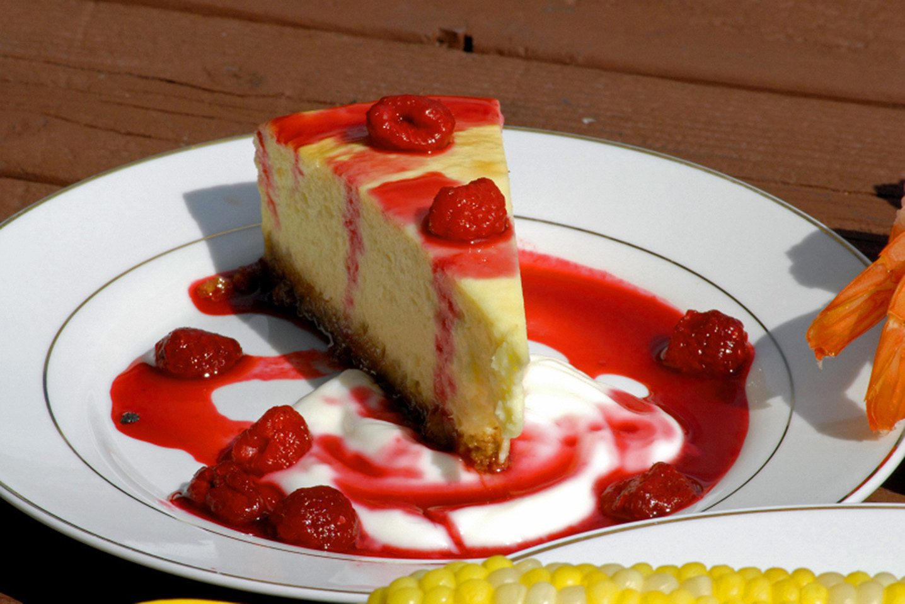

Cheesecake

Description
This recipe was passed down from my husband's grandmother.
You will love this New York-style cheesecake. The longer
it's refrigerated, the better. Enjoy!
Ingredients:
- 7 eggs
- 2 teaspoons lemon juice
- 2 teaspoons vanilla extract
- 2 tablespoons all-purpose flour
- 1 pint heavy cream
- 1 ½ cups white sugar
- 4 (8 ounce) packages cream cheese, softened
- ½ cup margarine, softened
- ¼ cup white sugar
- 2 ½ cups graham cracker crumbs